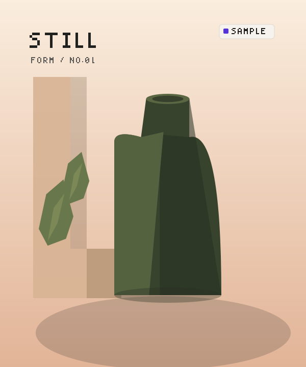
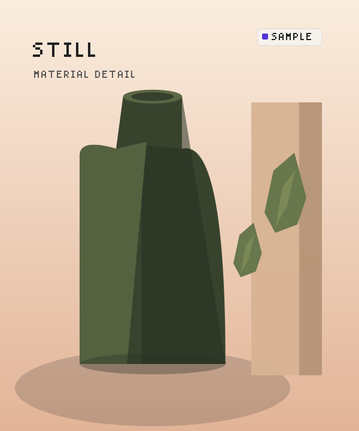
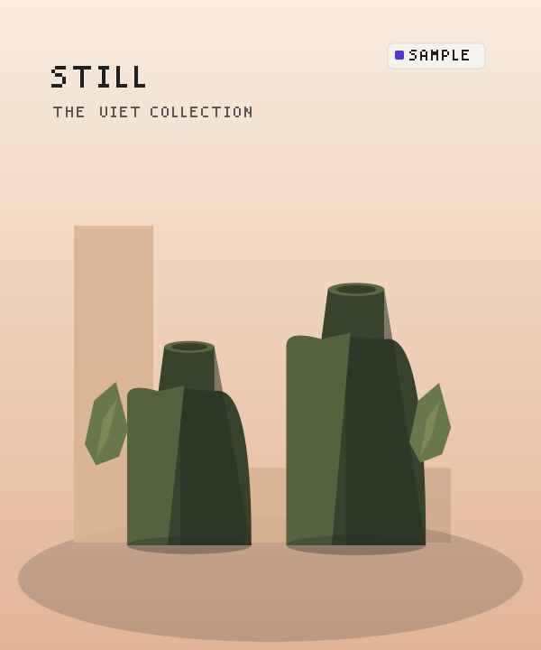
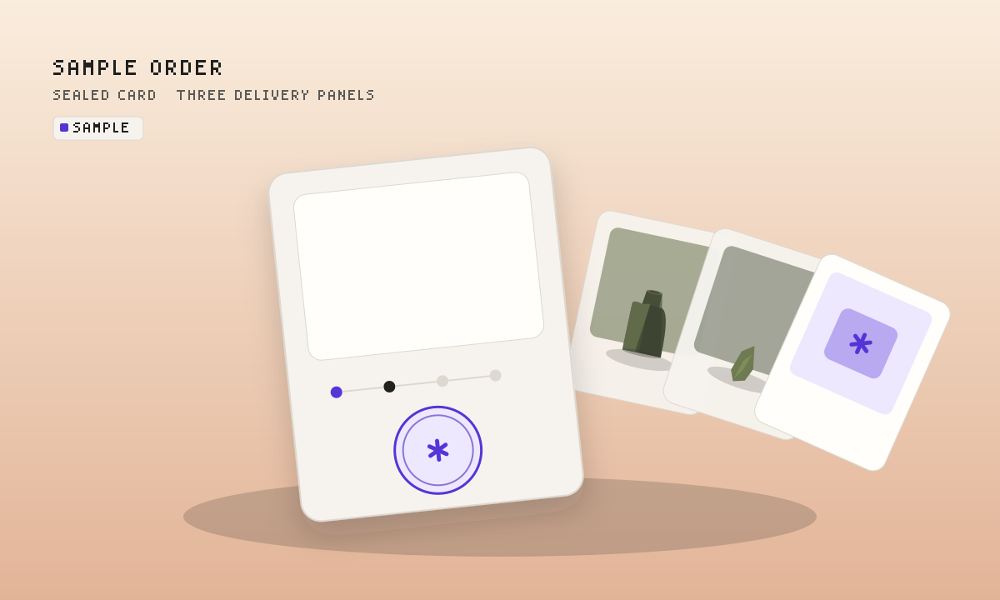
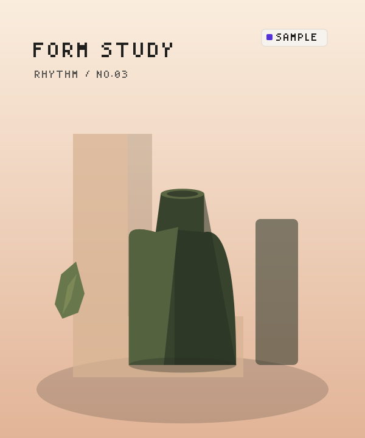
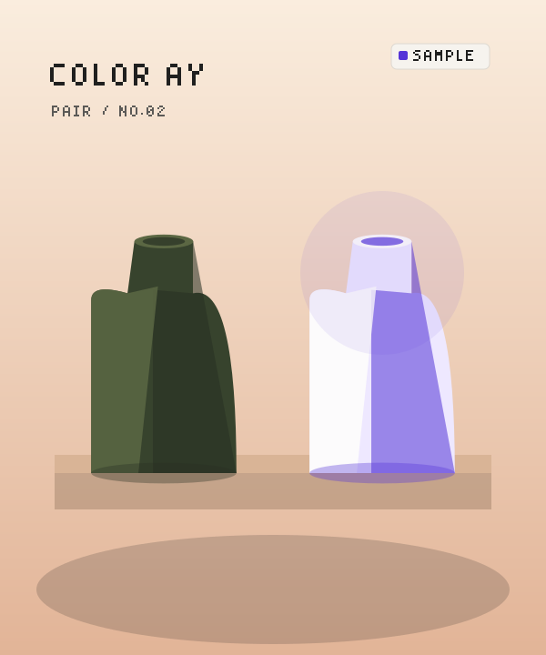
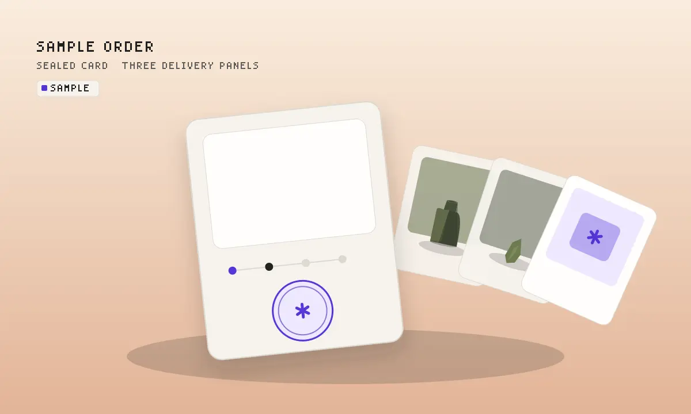

Prototype sample · No live payments · Preprod test runs only. Static fixture for browser light / dark / 375px review. Not a route-level verification (app cannot build in this phase). Alt text labels every plate as sample.






